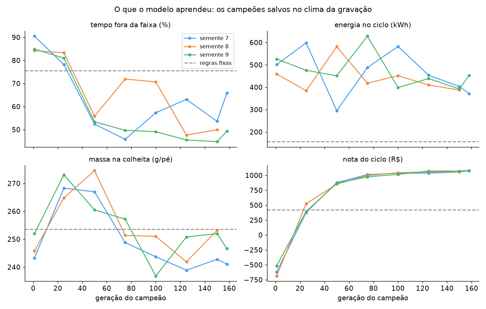

Os dados que faltavam: as réguas e o que cada geração aprendeu
O dashboard ia passar a mostrar só dado real, mas faltavam três coisas: as regras fixas e "sem controle" gravadas no mesmo clima dos campeões, a massa da alface dia a dia e o resumo de cada ciclo gravado (massa, energia, tempo fora da faixa, nota). O treino agora grava tudo isso. Para as 3 execuções da noite de 24/11, um script novo, treino/reavaliar.py, refez as gravações sem retreinar nada, conferiu cada uma contra a original e mandou para o Supabase.
O que foi feito
- O exportador do treino (
treino/treinar.py): a funçãogravaraceita qualquer controlador (rede, regras fixas, "sem controle") e devolve, além dos passos,controlador,massaPorDia(a massa por pé no fim de cada dia) eresumo(oResumoCiclomedido pelo mesmoMedidordo treino, mais a nota). Na geração 1 o treino salva o campeão dela e grava as duas réguas. A evolução, a nota e o simulador não mudaram. - A reavaliação (
treino/reavaliar.py): para cada execução já treinada, refaz o campeão da geração 1, regrava os campeões salvos e grava as réguas. Escreve emtreino/reavaliacoes/<execucao>/, no mesmo formato do treino. Nada emtreino/saidas/foi apagado nem sobrescrito. - O contrato:
GravacaoeResumoGravacaoganharamcontrolador,geracao,massaPorDiaeresumo, todos opcionais (as gravações antigas continuam válidas). Mudou junto emdocs/contrato-dados.md, nos esquemas Zod, novalidar-treino.mjs(agora aceita várias pastas) e notreino/nuvem.py. - A nuvem: o envio manda, além das gravações, o índice inteiro de cada pasta para o Storage (
indice.jsoneindice-reavaliacao.json). O dashboard junta esse índice às linhas da tabela.
Por quê
Todas as gravações usam SEMENTE_GRAVACAO = 12345. Assim o campeão da geração 1, o da 158, as regras fixas e "sem controle" viveram exatamente o mesmo tempo lá fora, passo a passo, e a comparação lado a lado é justa. Alternativa descartada: os 10 climas da prova. São mais robustos para a média, mas não dão uma gravação para reproduzir na tela.
A geração 1 nunca foi salva (o treino só salvava a cada 25 gerações). Mas ela não é aleatória: a população inicial sai de pesos_iniciais com o gerador da semente da execução, e o clima da geração 1 é semente × 100000 + 1. O script refaz isso, avalia as 1.024 redes e pega a melhor. Isso não é retreinar (não há evolução, só a avaliação que o treino já tinha feito), e é conferido: a melhor nota e a nota das regras têm de bater com o geracoes.json da noite, até a primeira casa decimal. Se não baterem, o script para. Nas 3 execuções, bateram.
As gravações da noite não tinham a massa nem o resumo. Regravar cada campeão no mesmo clima dá os mesmos passos (a simulação não tem sorteio), mais os números novos. O script compara passo a passo com a original. A diferença não é zero: os modelos/*.json guardam os pesos com 6 casas, e a gravação original usou os pesos exatos da memória. Medi o tamanho disso antes de aceitar (tabela abaixo) e fixei uma tolerância de 0,5 nas unidades dos sensores; uma mudança de verdade (outro modelo, outro simulador) afasta a estufa em graus inteiros.
O plano era uma migração com três colunas novas em genesis.gravacoes. Não deu para aplicar: o conector do Supabase e o CLI desta máquina estão logados na conta do trabalho, que não enxerga o projeto PequiDev. Em vez de parar, mudei o desenho: o treino/nuvem.py já envia arquivos para o bucket genesis-gravacoes com a conta do treino, então ele passou a enviar também o índice de cada pasta (poucos KB, cache de 60 s). O dashboard lê o índice e junta às linhas da tabela. Vantagens: nenhuma permissão nova, nenhuma mudança de RLS, e a pasta da reavaliação usa um nome próprio (indice-reavaliacao.json), então reenviar a pasta antiga do treino nunca apaga o que a reavaliação mandou.
Números

Fonte: o log do treino/reavaliar.py (um ciclo de 35 dias no clima 12345 para cada controlador). Nota em R$ por ciclo, mesma conta do treino (controle/metricas.py).
| Controlador | Massa (g/pé) | Energia (kWh) | Fora da faixa | Nota (R$) |
|---|---|---|---|---|
| Campeão g1, semente 7 / 8 / 9 | 243,3 / 245,8 / 252,0 | 501 / 459 / 527 | 90,5% / 84,2% / 84,9% | −619 / −688 / −515 |
| Campeão final (g158 / g150 / g158) | 241,1 / 253,2 / 246,6 | 371 / 387 / 453 | 65,9% / 50,0% / 49,3% | 1.077 / 1.062 / 1.080 |
| Regras fixas (igual nas 3) | 253,6 | 157 | 75,5% | 420 |
| Sem controle (igual nas 3) | 7,8 | 0 | 99,9% | −8.462 |
| Conferência | Semente 7 | Semente 8 | Semente 9 |
|---|---|---|---|
g1 refeito: melhor nota (esperado no geracoes.json) | −543,3 (−543,3) | −742,5 (−742,5) | −521,9 (−521,9) |
| g1 refeito: regras fixas no clima da geração 1 | 356,5 (356,5) | 297,1 (297,1) | 268,8 (268,8) |
| Gravações comparadas com a original | 7 | 6 | 7 |
| Maior diferença num passo | 0,01 | 0,054 (luz, µmol/m²/s) | 0,005 |
Na semente 8, g125, a maior diferença foi 0,054 µmol/m²/s de luz (numa escala de centenas) e 0,003 numa ação, em 778 dos 5.040 passos. A nota da g1 refeita difere da do geracoes.json porque são climas diferentes: lá, o clima da geração 1; aqui, o da gravação.
O que deu errado ou surpreendeu
A primeira tolerância era apertada demais. Com 0,05, a semente 8 parou na g125 (0,054). Antes de afrouxar, medi campo por campo: era a luz, e as ações mudavam no máximo 0,003. A tolerância subiu para 0,5 com essa conta escrita no código.
O g1 entrava duas vezes. No teste, o treino novo já salva o g1 em modelos/, e o script o pegava de novo, com os pesos arredondados. Agora o g1 refeito (pesos exatos) é o único.
"Sem controle" mata a alface. Sem exaustor nem névoa, a estufa fechada esquenta, a planta para de crescer e termina com 7,8 g por pé (nota −R$ 8.462). É a régua de baixo, e mostra que o controle importa.
O campeão gasta muita energia. Ele ganha das regras na nota porque fica mais tempo perto do meio da faixa (a nota pune a distância do meio), mas gasta 2,4 a 4 vezes a energia. Para o artigo: a nota atual valoriza conforto da planta mais do que a conta de luz. Fica registrado para a discussão da nota, que não foi mexida aqui.
Como reproduzir
.venv\Scripts\python.exe -m treino.reavaliar treino/saidas/fase1-semente7-20261124 treino/saidas/fase1-semente8-20261124 treino/saidas/fase1-semente9-20261124
cd dashboard
node scripts/validar-treino.mjs ../treino/saidas/fase1-semente9-20261124 ../treino/reavaliacoes/fase1-semente9-20261124
cd ..
.venv\Scripts\python.exe -m treino.nuvem --uma-vez treino/reavaliacoes/fase1-semente9-20261124
.venv\Scripts\python.exe -m pytest treino controle simulador
.venv\Scripts\python.exe docs/passos/imagens/gerar.pyEm aberto
- A migração com colunas próprias (
controlador,geracao,resumo) fica para quando houver acesso ao projeto PequiDev desta máquina. O índice no Storage funciona sem ela. - A nota e o gasto de energia: tema para a próxima rodada de treino.
- Passo 10: o dashboard passa a reproduzir estas gravações no modo Produtor.
Links
- Código:
treino/treinar.py(gravar,primeira_geracao),treino/reavaliar.py,treino/nuvem.py(passo 5 douma_volta),dashboard/src/modules/treino/domain/contrato.ts,dashboard/src/modules/treino/infrastructure/supabase/fonteTreinoSupabase.ts. - Contrato: docs/contrato-dados.md; nuvem: docs/nuvem.md.
- Testes:
treino/test_treino.py(o treino curto grava as réguas; a reavaliação refaz o g1 e confere os passos),treino/test_nuvem.py.